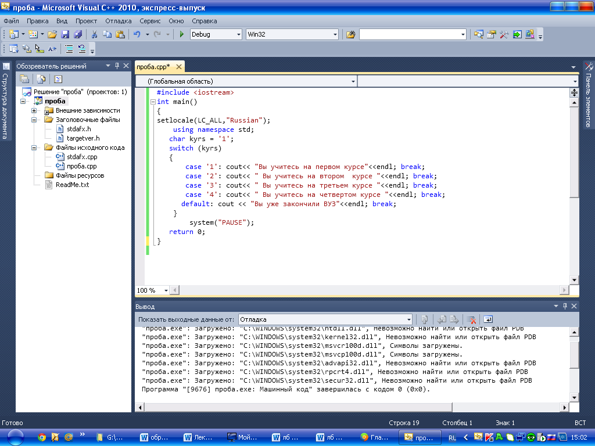

Лабораторная работа № 3
Разработка программ с использованием оператора switch.
Цель работы: «Знакомство и получение навыков работы по созданию программ с использованием оператора switch».
Материальное обеспечение: Компьютерное оборудование и программное обеспечение.
Основные понятия и определения
Если необходимо осуществить проверку определенных значений, то можно использовать оператор C++ switch. Данный оператор switch предназначен для организации выбора из множества различных вариантов, причём условием должно выступать равенство переменной (или выражения) конкретному значению. При использовании оператора switch, необходимо указать условие и затем один или несколько вариантов (case), которые программа попытается сопоставить с условием.
Выражение, которое следует за ключевым словом switch в круглых скобках, может быть любым выражением, допустимыми в языке С++, значение которого должно быть целым. Ключевое слово case служит для того, чтобы описать каждый конкретный случай. После него ставится двоеточие.
Оператор switch состоит из двух частей. Первая часть оператора switch представляет собой условие, которое появляется после ключевого слова switch. Вторая часть представляет собой возможные варианты соответствия. Когда программа встречает оператор switch, она сначала исследует условие, а затем пытается найти среди возможных вариантов тот, который соответствует условию. Если программа находит соответствие, выполняются указанные операторы.
Использование оператора break. Если C++ встречает вариант, соответствующий условию оператора switch, то он подразумевает, что все последующие варианты тоже соответствуют условию. Оператор break указывает C++ завершить текущий оператор switch и продолжить выполнение программы с первого оператора, следующего за оператором switch. Если удалить оператор break, то программа выведет не только требуемое сообщение, но и сообщение для всех последующих вариантов (потому что если один вариант является истинным, то и все последующие варианты в C++ рассматриваются как истинные).
Оператор switch предпочтительнее оператора if в тех случаях, если в программе требуется разветвить вычисления на количество направлений, большее двух, и выражение, по значению которого производится переход на ту или иную ветвь, является целочисленным. Часто это справедливо даже для двух ветвей, поскольку улучшает наглядность программы.
Этапы выполнения программы включают следующие пункты.
1.Определяете, с какими именно библиотеками (заголовочными файлами) вы будете работать. В данном случае с библиотекой <iostream>. Данная библиотека обеспечивает работу потока cout.
2.Написание главной функции программы. Функция main - главная функция программы.
3.Начало тела функции. Открывается фигурная скобка.
4.Описание переменных. Определяем тип переменных, с которыми будете работать.
5.Написание условия задачи. Определяете использование оператора switch.
6.Написание операторов программы и выражений. В данном случае используем оператор cout, чтобы вывести сообщение на экран.
7.Конец функции. Закрывается фигурная скобка.
Методический пример.
Написать программу, которая определяет, на каком курсе вы учитесь.

Результат программы: Вы учитесь на первом курсе.
Варианты заданий:
1.Написать программу, которая, используя, оператор switch из множества вариантов выбирает соответствующее значение. Определите, в каком вузе вы учитесь.
2.Написать программу, которая, используя, оператор switch из множества вариантов выбирает соответствующее значение. Определите, какую дисциплину вы изучаете.
3.Написать программу, которая, используя, оператор switch из множества вариантов выбирает соответствующее значение. Определите вашу группу.
4.Написать программу, которая, используя, оператор switch из множества вариантов выбирает соответствующее значение. Определите школу, которую вы закончили.
5.Написать программу, которая, используя, оператор switch из множества вариантов выбирает соответствующее значение. Определите вашу специальность.
6.Написать программу, которая, используя, оператор switch из множества вариантов выбирает соответствующее значение. Определите ваше хобби.
7.Написать программу, которая, используя, оператор switch из множества вариантов выбирает соответствующее значение. Определите вашу фамилию.
8.Написать программу, которая, используя, оператор switch из множества вариантов выбирает соответствующее значение. Определите ваше отчество.
Порядок выполения работы:
1.Изучить теоретические сведения по данной лабораторной работе.
2.Составить программу для заданного варианта.
3.Записать программу на языке Visual C++.
4.Отладить программу.
5.Продемонстрировать работу программы на ПК для заданного варианта.
Содержание отчета:
1.Тема и цель работы.
2.Вариант задания.
3.Блок – схема исходной задачи.
4.Листинг и результат программы.
5.Контрольные вопросы.
Контрольные вопросы:
1.Для чего предназначен оператор switch?
2.Для чего служит ключевое слово case?
3.Какой знак препинания ставится после ключевого слова case?
4.Для выхода из оператора switch используется оператор…………..
Литература:
1.Хортон А. Visual 2010: полный курс.:Пер. с анг.-М.:ООО «И.Д.Вильямс», 2011г , 1216 с.: ил.
2.Пахомов Б.И. С/C++ и MS Visual C++ 2010 для начинающих. – СПб.:БХВ-Петербург, 2011.-736 с.:ил.
3.Зиборов В. В. MS Visual C++ 2010 в среде.NET. Библиотека программиста. — СПб.: Питер,
2012. — 320 с.: ил.
4.Прохоренок Н.А. Программирование на С++ в Visual Studio 2010 Express, - СПб.: Питер, 2011г , 71 с.: ил.
5.Степаненко О.Е. VisualC++.NET.Классикапрограммирования.:-М:Научнаякнига,К.;Бу-кипист,2010.—768с.